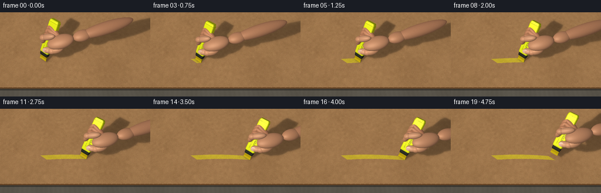
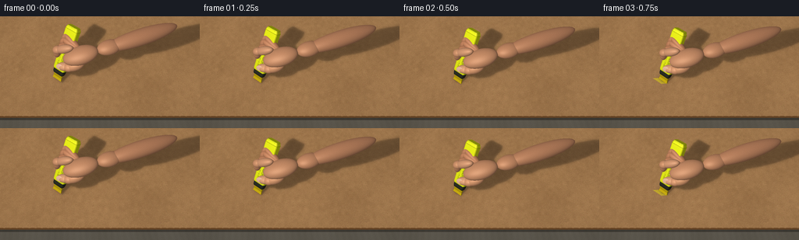

CODING AGENTS AS PIXEL WORLD MODELS
traex/GPT-6.1-Sol · phygen_034
点击播放 · 原生 RGB 像素
逐轮保存的候选
回放视频、检查图与代码变化。
每份候选均可单独播放。实际图片检查记录在下方工具轨迹中。
候选 01播放与检查图
点击播放 · 原生 RGB 像素


展开代码变化
--- 上一保存版本
+++ 本次保存版本
@@ -0,0 +1,476 @@
+"""Procedural, deterministic macro shot; no models or rendering engines."""
+from pathlib import Path
+import math
+import numpy as np
+from PIL import Image, ImageDraw, ImageFilter, ImageFont
+import artifact_io
+
+ROOT = Path(__file__).resolve().parent
+W, H, SS = 256, 144, 3
+RW, RH = W * SS, H * SS
+RNG = np.random.default_rng(34207)
+
+
+def unit(a):
+ a = np.asarray(a, dtype=float)
+ return a / np.linalg.norm(a)
+
+
+EYE = np.array([0., -10., 16.])
+FWD = unit(-EYE)
+RIGHT = np.array([1., 0., 0.])
+UP = unit(np.cross(RIGHT, FWD))
+FOCAL = RH / (2 * np.tan(np.deg2rad(29) / 2))
+yy, xx = np.mgrid[:RH, :RW]
+RAYS = (FWD + (xx[..., None] + .5 - RW/2) / FOCAL * RIGHT
+ - (yy[..., None] + .5 - RH/2) / FOCAL * UP).astype(np.float32)
+PLANE_T = -EYE[2] / RAYS[..., 2]
+PLANE_P = EYE + RAYS * PLANE_T[..., None]
+A = unit([.35, .48, .80])
+U = unit([A[1], -A[0], 0.])
+V = unit(np.cross(U, A))
+LIGHT = np.array([-5., -5., 11.])
+
+
+def project(p):
+ d = np.asarray(p) - EYE
+ depth = d @ FWD
+ return np.stack([RW/2 + FOCAL*(d @ RIGHT)/depth,
+ RH/2 - FOCAL*(d @ UP)/depth], axis=-1), depth
+
+
+def noise(size, std=1):
+ h, w = size
+ return RNG.normal(0, std, (h, w)).astype(np.float32)
+
+
+def smooth_noise(w, h, coarse, amp):
+ a = noise((coarse, max(2, int(coarse*w/h))))
+ return np.asarray(Image.fromarray(a).resize((w, h), Image.Resampling.BICUBIC))*amp
+
+
+# A fixed, finely fibrous paper texture, sampled in world coordinates.
+TW, TH = 2200, 1600
+grain = smooth_noise(TW, TH, 9, 2.6)
+grain += smooth_noise(TW, TH, 65, 2.6)
+grain += smooth_noise(TW, TH, 450, 2.0)
+grain += noise((TH, TW), 2.2)
+tex = np.empty((TH, TW, 3), np.float32)
+tex[:] = [159, 119, 77]
+tex += grain[..., None]*np.array([1., .87, .67])
+paper = Image.fromarray(np.clip(tex, 0, 255).astype(np.uint8))
+d = ImageDraw.Draw(paper)
+for i in range(67000):
+ x, y = RNG.uniform(0, TW), RNG.uniform(0, TH)
+ length = RNG.uniform(.5, 5.3)
+ ang = RNG.normal(.13, .65)
+ if i % 3:
+ col = (int(RNG.uniform(129, 156)), int(RNG.uniform(93, 113)), int(RNG.uniform(58, 73)))
+ else:
+ col = (int(RNG.uniform(174, 196)), int(RNG.uniform(131, 151)), int(RNG.uniform(88, 109)))
+ d.line((x, y, x+length*math.cos(ang), y+length*math.sin(ang)), fill=col, width=1)
+TEX = np.asarray(paper).astype(np.float32)
+
+
+def sample_paper(p):
+ tx = np.clip((p[..., 0]+12)/24*(TW-1), 0, TW-2)
+ ty = np.clip((p[..., 1]+6)/18*(TH-1), 0, TH-2)
+ ix, iy = tx.astype(int), ty.astype(int)
+ fx, fy = (tx-ix)[..., None], (ty-iy)[..., None]
+ return ((TEX[iy, ix]*(1-fx)+TEX[iy, ix+1]*fx)*(1-fy)
+ +(TEX[iy+1, ix]*(1-fx)+TEX[iy+1, ix+1]*fx)*fy)
+
+
+BOARD_COLOR = sample_paper(PLANE_P)
+BOARD_MASK = ((PLANE_P[..., 1] >= -4.00 + .013*np.sin(PLANE_P[..., 0]*13))
+ & (np.abs(PLANE_P[..., 0]) < 10.8))
+table_p = EYE + RAYS * ((-.18-EYE[2])/RAYS[..., 2])[..., None]
+table_noise = (np.sin(table_p[..., 0]*1.8+table_p[..., 1]*.4)
+ + .6*np.sin(table_p[..., 0]*13+table_p[..., 1]*1.6))
+TABLE = np.array([92, 87, 77]) + table_noise[..., None]*1.8
+BASE = np.where(BOARD_MASK[..., None], BOARD_COLOR, TABLE).astype(np.float32)
+# Visible cut edge of the sheet, and its close shadow on the tabletop.
+edge = (~BOARD_MASK) & (PLANE_P[..., 1] > -4.14)
+BASE[edge] = np.array([104, 70, 39]) + np.sin(PLANE_P[edge, 0, None]*110)*7
+edge_shadow = (~BOARD_MASK) & (PLANE_P[..., 1] > -4.33) & ~edge
+BASE[edge_shadow] *= .68
+vignette = 1 - .085*((xx/RW-.43)**2 + (yy/RH-.44)**2)
+BASE *= vignette[..., None]
+
+
+def hull(points):
+ p = sorted(set(map(tuple, points)))
+ if len(p) < 3:
+ return p
+ def cross(o, a, b):
+ return (a[0]-o[0])*(b[1]-o[1])-(a[1]-o[1])*(b[0]-o[0])
+ lo, hi = [], []
+ for q in p:
+ while len(lo)>1 and cross(lo[-2], lo[-1], q)<=0:
+ lo.pop()
+ lo.append(q)
+ for q in reversed(p):
+ while len(hi)>1 and cross(hi[-2], hi[-1], q)<=0:
+ hi.pop()
+ hi.append(q)
+ return lo[:-1]+hi[:-1]
+
+
+def basis(direction):
+ x = unit(direction)
+ y = unit(np.cross([0, 0, 1], x))
+ z = unit(np.cross(x, y))
+ return np.stack([x, y, z], axis=1)
+
+
+def ellipsoid(center, radii, direction, color, material=2):
+ return dict(center=np.asarray(center), radii=np.asarray(radii),
+ basis=basis(direction), color=np.asarray(color), material=material)
+
+
+def bone(p, q, radius, color, flat=.95):
+ p, q = np.asarray(p), np.asarray(q)
+ return ellipsoid((p+q)/2, [np.linalg.norm(q-p)/2+radius*.55, radius, radius*flat],
+ q-p, color)
+
+
+def rounded_ring(w, h, r):
+ coords = []
+ for cx, cy, start in [(w/2-r, h/2-r, 0), (-w/2+r, h/2-r, 90),
+ (-w/2+r, -h/2+r, 180), (w/2-r, -h/2+r, 270)]:
+ for angle in np.linspace(start, start+90, 6, endpoint=False):
+ angle = np.deg2rad(angle)
+ coords.append([cx+r*np.cos(angle), cy+r*np.sin(angle)])
+ return np.array(coords)
+
+
+def barrel(tip, sections, color, mat):
+ rings = []
+ for s, w, h, r in sections:
+ ring = rounded_ring(w, h, r)
+ rings.append(tip+A*s+ring[:, :1]*U+ring[:, 1:]*V)
+ vertices = np.concatenate(rings)
+ n = len(rings[0])
+ triangles = []
+ for j in range(len(rings)-1):
+ for k in range(n):
+ l = (k+1)%n
+ triangles.extend([(j*n+k, j*n+l, (j+1)*n+l),
+ (j*n+k, (j+1)*n+l, (j+1)*n+k)])
+ for k in range(1, n-1):
+ triangles.extend([(0, k+1, k), ((len(rings)-1)*n, (len(rings)-1)*n+k,
+ (len(rings)-1)*n+k+1)])
+ return dict(vertices=vertices, triangles=triangles, color=np.array(color), material=mat)
+
+
+def nib_mesh(tip):
+ h = unit(A*[1, 1, 0])
+ points = []
+ for ring in [0, 1]:
+ for su, sv in [(-1,-1), (1,-1), (1,1), (-1,1)]:
+ if ring == 0:
+ points.append(tip+su*.445*U+sv*.055*h+np.array([0,0,.018]))
+ else:
+ points.append(tip+A*.59+su*.405*U+sv*.115*V)
+ tri = [(0,2,1),(0,3,2),(4,5,6),(4,6,7)]
+ for k in range(4):
+ l=(k+1)%4
+ tri.extend([(k,l,l+4),(k,l+4,k+4)])
+ return dict(vertices=np.array(points), triangles=tri,
+ color=np.array([193, 165, 14]), material=4)
+
+
+def scene(tip, f):
+ meshes = [nib_mesh(tip),
+ barrel(tip, [( .53,.91,.40,.065),(.69,.98,.54,.11),
+ (1.05,.98,.54,.11)], [44,46,37], 3),
+ barrel(tip, [( .94,1.02,.56,.12),(1.05,1.10,.62,.13),
+ (4.45,1.10,.62,.13),(4.62,.99,.55,.12)], [226,231,24], 1),
+ barrel(tip, [(4.42,1.11,.63,.13),(4.46,1.11,.63,.13)], [185,189,19], 1),
+ barrel(tip, [(4.60,.99,.55,.12),(4.70,.92,.51,.13)], [203,210,22], 1)]
+ def at(s, u, v):
+ return tip+A*s+U*u+V*v
+ skin = [196, 139, 102]
+ palm = at(3.05,1.40,.19)
+ wrist = palm+np.array([2.15,.56,.26])
+ arm = wrist+np.array([4.8,1.5,.58])
+ ell = [bone(wrist, arm, .69, [191,133,97], .83),
+ ellipsoid(wrist, [.95,.64,.48], [1,.27,.10], [195,137,100]),
+ ellipsoid(palm, [1.36,.80,.56], [1,.20,.19], skin)]
+ # Fingers are individually jointed, curling around the far face of the barrel.
+ # They are placed before the thumb; the z-buffer handles all overlap.
+ for s, off, r in [(3.05,.29,.31),(3.52,.57,.30),(3.88,.84,.27)]:
+ p=palm+np.array([-.26,.46,.04])+A*(s-3.05)*.25
+ q=at(s,-.32,.39-off*.20)
+ rpos=at(s-.57,-.61,-.10)
+ ell += [bone(p,q,r,[190,128,92]), bone(q,rpos,r*.9,[196,134,96])]
+ # Index finger: a soft bent arc over the upper surface.
+ p=at(3.38,.72,.73)
+ q=at(2.70,-.31,.74)
+ itip=at(1.99,-.54,.21)
+ ell += [bone(p,q,.345,[205,148,111]),
+ ellipsoid(q,[.40,.34,.32], q-p,[204,145,106]),
+ bone(q,itip,.285,[203,142,103])]
+ # Opposing thumb, crossing the near side, with a visible pale nail.
+ tbase=at(2.50,1.72,.24)
+ tjoint=at(1.86,1.02,.60)
+ ttip=at(1.57,.24,.65)
+ ell += [bone(tbase,tjoint,.43,[209,149,108], .9),
+ bone(tjoint,ttip,.355,[217,158,118], .85),
+ ellipsoid(tjoint,[.44,.365,.33], ttip-tjoint,[211,149,109])]
+ ndir=unit(ttip-tjoint)
+ nailcenter=ttip-ndir*.18+V*.277
+ # Basis aligned to the outward face of the thumbnail.
+ nbx=ndir
+ nby=unit(np.cross(V, nbx))
+ nbz=unit(np.cross(nbx,nby))
+ if np.dot(nbz,V)<0:
+ nby=-nby; nbz=-nbz
+ nail=dict(center=nailcenter, radii=np.array([.29,.217,.031]),
+ basis=np.stack([nbx,nby,nbz],axis=1),color=np.array([228,181,154]),material=5)
+ ell.append(nail)
+ return meshes, ell
+
+
+def scene_shadow(meshes, ell):
+ shadow=Image.new('L',(RW,RH),0)
+ draw=ImageDraw.Draw(shadow)
+ def put(points, opacity):
+ z=points[:,2]
+ k=LIGHT[2]/(LIGHT[2]-z)
+ p=LIGHT+(points-LIGHT)*k[:,None]
+ xy,_=project(p)
+ pol=hull(np.round(xy,2))
+ if len(pol)>2:
+ draw.polygon(pol,fill=opacity)
+ for m in meshes:
+ put(m['vertices'], 112)
+ ph=np.linspace(0,2*np.pi,16,endpoint=False)
+ th=np.linspace(.15,np.pi-.15,8)
+ samples=np.array([[np.sin(t)*np.cos(p),np.sin(t)*np.sin(p),np.cos(t)]
+ for t in th for p in ph])
+ for e in ell:
+ if e['material']==5:
+ continue
+ points=e['center']+(samples*e['radii'])@e['basis'].T
+ put(points,104)
+ broad=np.asarray(shadow.filter(ImageFilter.GaussianBlur(6.5))).astype(float)/255
+ tight=np.asarray(shadow.filter(ImageFilter.GaussianBlur(2.0))).astype(float)/255
+ return 1-.43*broad-.42*tight
+
+
+def stroke_path(t):
+ return np.array([-3.55+6.45*t, -.88+.14*np.sin(t*np.pi)-.07*t, 0.])
+
+
+def paint(base, progress):
+ if progress<=0:
+ return base.copy()
+ # Swept chisel face: persistent ink deposited only along the traversed path.
+ pts=[]
+ for t in np.linspace(0,progress,70):
+ center=stroke_path(t)
+ pts.append(project(center+U*.445)[0])
+ for t in np.linspace(progress,0,70):
+ center=stroke_path(t)
+ pts.append(project(center-U*.445)[0])
+ ink=Image.new('L',(RW,RH),0)
+ ImageDraw.Draw(ink).polygon([tuple(p) for p in pts], fill=255)
+ mask=np.asarray(ink.filter(ImageFilter.GaussianBlur(.65))).astype(np.float32)/255
+ rough=np.clip((BOARD_COLOR[...,0]-139)/31,.10,1)
+ fiber=.80+.20*np.sin(PLANE_P[...,1]*132+np.sin(PLANE_P[...,0]*19))
+ opacity=mask*(.65+.14*rough)*fiber
+ fleck=(np.sin(PLANE_P[...,0]*324+PLANE_P[...,1]*78)
+ *np.sin(PLANE_P[...,1]*257-PLANE_P[...,0]*93))
+ opacity*=np.where(fleck>.81,.33,1.)
+ pigment=np.array([224.,210.,24.])+(BOARD_COLOR-np.array([159,119,77]))*.77
+ out=base*(1-opacity[...,None])+pigment*opacity[...,None]
+ return out
+
+
+label=Image.new('L',(720,170),0)
+ld=ImageDraw.Draw(label)
+try:
+ font=ImageFont.truetype('DejaVuSans.ttf',61)
+ font2=ImageFont.truetype('DejaVuSans.ttf',25)
+except OSError:
+ font=ImageFont.load_default();font2=font
+ld.text((22,20),'HIGHLIGHTER',font=font,fill=210)
+ld.text((25,108),'CHISEL TIP / YELLOW',font=font2,fill=165)
+LABEL=np.asarray(label)
+
+
+class Renderer:
+ def __init__(self, background):
+ self.depth=PLANE_T.copy()
+ self.normal=np.zeros((RH,RW,3),np.float32)
+ self.color=background.copy()
+ self.mat=np.zeros((RH,RW),np.uint8)
+
+ def mesh(self,m,tip):
+ vertices=m['vertices']
+ scr,z=project(vertices)
+ for ids in m['triangles']:
+ ids=np.array(ids)
+ p=scr[ids]
+ xmin=max(0,int(np.floor(p[:,0].min()))); xmax=min(RW-1,int(np.ceil(p[:,0].max())))
+ ymin=max(0,int(np.floor(p[:,1].min()))); ymax=min(RH-1,int(np.ceil(p[:,1].max())))
+ if xmin>xmax or ymin>ymax:
+ continue
+ gx,gy=np.meshgrid(np.arange(xmin,xmax+1)+.5,np.arange(ymin,ymax+1)+.5)
+ den=(p[1,1]-p[2,1])*(p[0,0]-p[2,0])+(p[2,0]-p[1,0])*(p[0,1]-p[2,1])
+ if abs(den)<1e-8:
+ continue
+ b0=((p[1,1]-p[2,1])*(gx-p[2,0])+(p[2,0]-p[1,0])*(gy-p[2,1]))/den
+ b1=((p[2,1]-p[0,1])*(gx-p[2,0])+(p[0,0]-p[2,0])*(gy-p[2,1]))/den
+ b2=1-b0-b1
+ inv=b0/z[ids[0]]+b1/z[ids[1]]+b2/z[ids[2]]
+ depth=1/np.maximum(inv,1e-8)
+ sl=(slice(ymin,ymax+1),slice(xmin,xmax+1))
+ valid=(b0>=-1e-6)&(b1>=-1e-6)&(b2>=-1e-6)&(depth<self.depth[sl])
+ if not valid.any():
+ continue
+ vv=vertices[ids]
+ normal=unit(np.cross(vv[1]-vv[0],vv[2]-vv[0]))
+ if np.dot(normal,EYE-vv.mean(0))<0:
+ normal=-normal
+ self.depth[sl][valid]=depth[valid]
+ self.normal[sl][valid]=normal
+ self.color[sl][valid]=m['color']
+ self.mat[sl][valid]=m['material']
+
+ def ellipse(self,e):
+ c=e['center'];b=e['basis'];r=e['radii']
+ corners=np.array([[sx,sy,sz] for sx in [-1,1] for sy in [-1,1] for sz in [-1,1]])
+ pts=c+(corners*r)@b.T
+ scr,_=project(pts)
+ x0=max(0,int(scr[:,0].min())-2);x1=min(RW,int(scr[:,0].max())+3)
+ y0=max(0,int(scr[:,1].min())-2);y1=min(RH,int(scr[:,1].max())+3)
+ if x0>=x1 or y0>=y1:
+ return
+ sl=(slice(y0,y1),slice(x0,x1))
+ rays=RAYS[sl]
+ origin=(EYE-c)@b/r
+ dr=(rays@b)/r
+ qa=(dr*dr).sum(-1);qb=2*(dr*origin).sum(-1);qc=(origin*origin).sum()-1
+ disc=qb*qb-4*qa*qc
+ t=(-qb-np.sqrt(np.maximum(disc,0)))/(2*qa)
+ valid=(disc>=0)&(t>0)&(t<self.depth[sl])
+ if not valid.any():
+ return
+ loc=(origin+dr*t[...,None])
+ normal=(loc/r)@b.T
+ normal/=np.linalg.norm(normal,axis=-1,keepdims=True)+1e-10
+ self.depth[sl][valid]=t[valid]
+ self.normal[sl][valid]=normal[valid]
+ self.color[sl][valid]=e['color']
+ self.mat[sl][valid]=e['material']
+
+ def finish(self,tip,ell):
+ mask=self.mat>0
+ pos=EYE+RAYS[mask]*self.depth[mask,None]
+ n=self.normal[mask]
+ mat=self.mat[mask]
+ color=self.color[mask].astype(float)
+ light=LIGHT-pos
+ light/=np.linalg.norm(light,axis=-1,keepdims=True)
+ view=EYE-pos
+ view/=np.linalg.norm(view,axis=-1,keepdims=True)
+ half=light+view
+ half/=np.linalg.norm(half,axis=-1,keepdims=True)
+ diffuse=np.maximum((n*light).sum(-1),0)
+ spec=np.maximum((n*half).sum(-1),0)
+ # Soft occlusion by the gripping fingers. The broad source prevents harsh edges.
+ occ=np.ones(len(pos))
+ for e in ell:
+ if e['material']==5:
+ continue
+ r=e['radii']*.91
+ o=((pos+light*.035)-e['center'])@e['basis']/r
+ dr=(light@e['basis'])/r
+ aa=(dr*dr).sum(-1);bb=(dr*o).sum(-1);cc=(o*o).sum(-1)-1
+ dis=bb*bb-aa*cc
+ near=(-bb-np.sqrt(np.maximum(dis,0)))/aa
+ occluded=(dis>0)&(near>.045)&(near<12)
+ occ[occluded]=np.minimum(occ[occluded],.56)
+ local=pos-tip
+ ss=local@A;uu=local@U;vv=local@V
+ plastic=mat==1
+ text=plastic&(vv>.25)&(np.abs(uu)<.43)&(ss>1.18)&(ss<3.95)
+ if text.any():
+ lx=np.clip((ss[text]-1.18)/(3.95-1.18)*719,0,719).astype(int)
+ ly=np.clip((.43-uu[text])/.86*169,0,169).astype(int)
+ alpha=LABEL[ly,lx].astype(float)/255
+ color[text]=color[text]*(1-alpha[:,None])+np.array([46,54,24])*alpha[:,None]
+ skin=mat==2
+ # Subtle pores and warm irregular pigmentation, attached to the skin.
+ freckles=np.sin(pos[:,0]*49+pos[:,2]*17)*np.sin(pos[:,1]*57-pos[:,0]*12)
+ color[skin]+=freckles[skin,None]*1.45
+ nib=mat==4
+ color[nib]+=np.sin(uu[nib,None]*112)*np.array([7,5,1])
+ ambient=.52+.035*n[:,2]
+ shading=ambient+.49*diffuse*occ
+ result=color*shading[:,None]
+ highlight=np.where(plastic, spec**35*.27,
+ np.where(mat==3,spec**45*.14,np.where(mat==5,spec**55*.24,
+ np.where(nib, spec**12*.025, spec**22*.095))))
+ result+=highlight[:,None]*np.array([255,241,220])*occ[:,None]
+ # Thin soft edge light, especially across the yellow barrel.
+ rim=(1-np.maximum((n*view).sum(-1),0))**3
+ result+=rim[:,None]*np.where(skin[:,None],np.array([10,5,3]),np.array([8,8,3]))
+ out=self.color.copy()
+ out[mask]=result
+ return np.clip(out,0,255)
+
+
+def make_frame(i):
+ if i<2:
+ progress=0.
+ lift=.40*(1-i/2)
+ elif i<=15:
+ progress=(i-2)/13
+ lift=.007
+ else:
+ progress=1.
+ lift=.12+(i-16)*.19
+ tip=stroke_path(progress)+np.array([0,0,lift])
+ # A small, smooth follow-through after the finished stroke.
+ if i>16:
+ tip+=np.array([.055*(i-16),.055*(i-16),0])
+ meshes,ell=scene(tip,i)
+ background=paint(BASE,progress)
+ shadow=scene_shadow(meshes,ell)
+ background*=shadow[...,None]
+ if lift<.15:
+ cp,_=project(stroke_path(progress))
+ contact=Image.new('L',(RW,RH),0)
+ cd=ImageDraw.Draw(contact)
+ cd.ellipse((cp[0]-9,cp[1]-3,cp[0]+10,cp[1]+5),fill=70)
+ contact=np.asarray(contact.filter(ImageFilter.GaussianBlur(2))).astype(float)/255
+ background*=1-contact[...,None]*.35
+ renderer=Renderer(background)
+ for m in meshes:
+ renderer.mesh(m,tip)
+ for e in ell:
+ renderer.ellipse(e)
+ image=renderer.finish(tip,ell)
+ # Supersampled edges and a restrained photographic sensor grain.
+ out=Image.fromarray(image.astype(np.uint8)).resize((W,H),Image.Resampling.LANCZOS)
+ out=np.asarray(out).astype(float)
+ rg=np.random.default_rng(1400+i)
+ out+=rg.normal(0,.35,(H,W,1))
+ return np.clip(out,0,255).astype(np.uint8)
+
+
+def main():
+ frames=[]
+ for i in range(20):
+ frames.append(make_frame(i))
+ print(f'Rendered {i+1}/20',flush=True)
+ frames=np.stack(frames)
+ artifact_io.save(frames,ROOT)
+ print(f'Saved {frames.shape}, {frames.dtype}',flush=True)
+
+
+if __name__=='__main__':
+ main()
可观测工具轨迹
实际执行的命令与返回图片。
命令 1exit 0
/bin/bash -lc "ls -la && cat prompt.txt && printf '\\n---RULES---\\n' && cat GENERATION_RULES.md && printf '\\n---SPEC---\\n' && cat task_spec.json"
命令 2exit 0
/bin/bash -lc "cat artifact_io.py && printf '\\n---DEPENDENCIES---\\n' && python - <<'PY' import numpy,PIL print(numpy.__version__,PIL.__version__) PY"
命令 3exit 0
/bin/bash -lc 'python generate.py'
命令 4exit 0
/bin/bash -lc "python - <<'PY'
from pathlib import Path
import numpy as np
from PIL import Image
p=Path('.')
a=np.load(p/'pixels.npz')['pixels']
assert a.shape==(144,256,20),a.shape
assert a.dtype==np.uint32
files=sorted((p/'frames').glob('*.png'))
assert len(files)==20
for f in files:
im=Image.open(f)
assert im.mode=='RGB' and im.size==(256,144)
frames=np.stack([np.asarray(Image.open(f)) for f in files])
print('Verified:',len(files),'RGB frames, 256x144, 4 fps, 5 seconds')
print('Mean consecutive frame change:',np.round(np.abs(np.diff(frames.astype(float),axis=0)).mean(axis=(1,2,3)),2))
print('Artifacts:',', '.join(f.name for f in p.iterdir() if f.name in ('pixels.npz','index.html','inspection.png','transition_check.png','generate.py')))
PY
command -v ffmpeg || true"保存候选 1 份；完成命令 4 次；可验证图片返回 0 张。原始 API 响应与完整日志保留在本地。